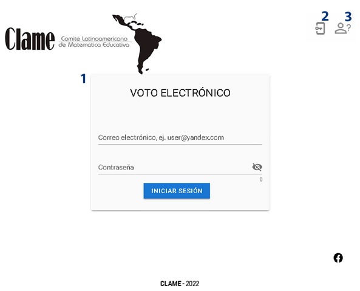

Manual del usuario
Introducción
VOT-E es un sistema de voto electrónico implementado sobre Blockchain. El acceso al sistema es por dirección de correo electrónico, y los votos se registran en total anonimato. Antes del día 30 de junio el sistema envía por correo electrónico a cada miembro del CLAME las credenciales de acceso. Con esa credencial podemos acceder al sistema en VOT-E.
Características del proceso de votación
- Existen 7 cargos para postulaciones del Consejo directivo del CLAME: Presidencia, Secretaría, Tesorería, y cuatro vocalías (Norteamérica, Centroamérica, Caribe y Sudamérica)
- El votante (miembro del CLAME) tiene derecho a emitir un voto por cada cargo postulado. Con un máximo de 7 votos, uno por cada cargo.
- El votante no esta obligado a votar. Está permitido el voto en blanco de cualquiera de los cargos de la boleta.
- El voto una vez confirmado es inalterable, y se registra en total anonimato.
Componentes del sistema VOT-E
Menú de navegación lateral
Es el componente principal de navegación en el sistema y podemos realizar las acciones siguientes:
- Visitar pantalla de bienvenida
- Cambiar credenciales de acceso
- Emitir/Consultar voto
- Consultar resultados finales
- Consultar candidatos
- Salir
Menú de navegación inferior
Es un componente de acceso rápido, donde podemos realizar las acciones siguientes:
- Visitar la pantalla de bienvenida
- Emitir/Consultar voto
- Consultar candidatos
- Obtener información del sistema, soporte, etc.
Línea de tiempo
La línea de tiempo es útil por que muestra información cronológica de cada fase activa del periodo electoral, y se muestra en la pantalla de bienvenida, que puede ser visitada en cualquier momento por nosotros. En ella se muestran las fases:
- No iniciado: El proceso de votación no ha iniciado todavía, los votantes pueden acceder y navegar en el sistema, pero no pueden ejercer derecho al voto.
- Iniciado: Los votantes ya pueden ejercer su derecho al voto, también pueden consultar su boleta en cualquier momento.
- Finalizado: Los gestores pueden consultar los resultados generales de la votación.
- Resultados: Todos los usuarios de la plataforma pueden consultar los resultados.

Autenticación
Podemos acceder al sistema visitando el enlace siguiente:
Nota
Debemos recibir en nuestra bandeja de correo electrónico un mensaje de la plataforma con la credencial de acceso al sistema. De no ser así, ver la sección Generar nueva credencial de acceso.

Generar nueva credencial de acceso
Podemos solicitar al sistema la generación de una nueva credencial de acceso, los requisitos son la dirección de correo previamente registrada y la nueva credencial.
Nota
Debemos recibir en la bandeja de correo electrónico una notificación con la nueva credencial de acceso.
Modificar credencial de acceso
Podemos en cualquier momento modificar nuestra credencial de acceso. Nos movemos al menú de navegación lateral y seleccionamos la opción “Cambiar credenciales”. Una vez ahí debemos la insertar contraseña actual, la nueva contraseña y seleccionar aceptar para enviar el formulario.
Consultar los candidatos o postulados
La vista de candidatos muestra una lista agrupada por cargos de todos los miembros postulados. Podemos conocer de cada candidato su nombre y apellidos, nacionalidad y su biografía.
Información
Esta vista muestra el acceso a las secciones:
- Preguntas más frecuentes
- Soporte, donde podemos contactar con el personal de soporte a través de telegram o correo electrónico
- Información sobre CLAME
Emitir voto
Una vez que el proceso de votación a iniciado, se activa en el sistema la opción para emitir voto. Se puede acceder por cualquiera de los dos menú de navegación (lateral e inferior).
No estamos obligado a votar por todos los cargos. Es decir, es posible el voto en blanco de cualquiera de los cargos de la boleta.

Cerrar sesión o salir del sistema
Podemos salir del sistema dirigiéndonos al menú de navegación lateral y presionando Cerrar.